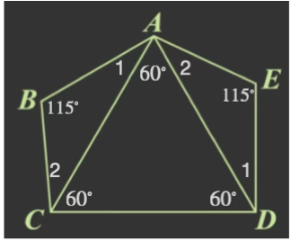
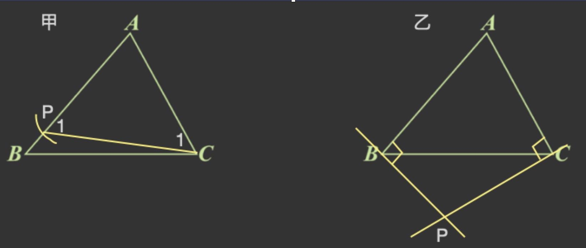
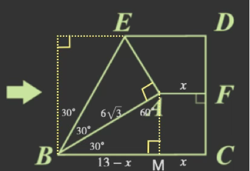
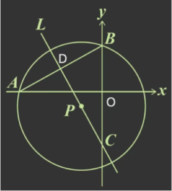

年度解析+等級對照表
107 年會考數學解析：高鑑別度的難題試煉
107 年會考數學的命題節奏極具挑戰性，主要鑑別度從第 16 題便提早開啟，全卷有近四成的題目通過率低於 0.5。
綜觀 107 年會考數學試題，難度分布顯著提升，是近年來挑戰性極高的一年。
高難度題型密集：全卷共有 8 題通過率低於 0.5，其中更有 4 題落在 0.3 幾的「極難區間」。這代表該年度的鑑別度極高，考生必須在複雜的幾何判斷與代數變換中展現極強的韌性。
關鍵分水嶺：這 4 題「魔王題」直接決定了頂尖考生的落點。在這種難度下，能否冷靜分析題意並正確選取解題工具，是區分 A+ 與 A++ 的關鍵。
NUMA 策略提醒： 面對高難度年份，戰術比算力更重要。學會「取捨」與「精準破題」是奪分的唯一途徑。
等級加標示與加權分數對照表
等級加標示與答對題數對照表
各科等級加標示人數百分比統計表
試題疑義
107年國中教育會考試題疑義表107年會考-數學詳解
第一部分:選擇題(第1 ~ 26 題)
1.
答案
\((D)\)
詳解
對摺後可以重疊的圖形才是對稱圖形
平行四邊形不是對稱圖形
2.
答案
\((B)\)
詳解
拆括弧，注意正負號
\(a=\frac{3}{14}-\frac{2}{15}-\frac{1}{16}\)
\(b=\frac{3}{14}-\frac{2}{15}+\frac{1}{16}\)
\(c=\frac{3}{14}-\frac{2}{15}-\frac{1}{16}\)
\(\therefore a=c,\ b\neq c\)
3.
答案
\((B)\)
詳解
"通過點"的意思是此點為一解
\(-4＝3\times 0+a\Rightarrow a=-4\)
4.
答案
\((D)\)
詳解
找出 36的因數，且超過 10者。
\(36=1\times 36\)
\(=2\times 18\)
\(=3\times 12\)
\(=4\times 9\)
\(=6\times 6\)
36 的因數有 1、2、3、4、6、9、12、18、36
超過 10的有 12、18、36
購買筆記本的花費可能為12或18或36的倍數。
所以只有(D)48元符合。
5.
答案
\((A)\)
詳解
\(\left\{\begin{matrix}
7a-3b=8
\\ 3a-b=8
\end{matrix}\right.\Rightarrow a=8,\ b=16\)
\(\Rightarrow a+b=24\)
6.
答案
\((C)\)
詳解
甲袋(阿馮)共有 5顆球
紅球有 2顆，抽中紅球機率\(=\frac{2}{5}\)
黃球有 2顆，抽中黃球機率\(=\frac{2}{5}\)
乙袋(小潘)共有 10顆球
紅球有 4顆，抽中紅球機率\(=\frac{4}{10}=\frac{2}{5}\)
黃球有 2顆，抽中黃球機率\(=\frac{2}{10}=\frac{1}{5}\)
7.
答案
\((A)\)
詳解
\(\sqrt 6\times (\frac{1}{\sqrt
3}-1)\)
\(=\sqrt 6\times \frac{1}{\sqrt 3}-\sqrt
6\)
\(=\sqrt 2-\sqrt 6\)
8.
答案
\((D)\)
詳解
\((x-11)(x+3)=0,\ x=11\ or
-3\)
\(a=11,\ b=-3\)
\(\Rightarrow a-2b=11+6=17\)
9.
答案
\((C)\)
詳解
先求出圓心角
\(\angle
C=180^{\circ}-60^{\circ}-100^{\circ}=20^{\circ}\)
\(\overline{DE}=\overline{CD}\Rightarrow
\angle D=2\angle C=40^{\circ}\)
\(2\times 2 \times \pi\times
\frac{40}{360}=\frac{4}{9}\pi\)
10.
答案
\((C)\)
詳解
設特價 \(x\) 元
\(x=61000\div 10 +800=6900\)
\(20\times (6900-800)+30\times
6900=329000\)
11.
答案
\((C)\)
詳解

三角形全等性質：SSS
\(n\) 邊形內角和\(=(n-2)\times 180^{\circ}\)
\(\overline{AB}=\overline{DE},
\overline{BC}=\overline{AE}, \overline{AC}=\overline{AD}\)
\(\therefore \triangle ABC\cong \triangle
DEA\) (SSS)
五邊形內角和\(=(5-2)\times
180^{\circ}=540^{\circ}\)
\(\angle A+\angle B+\angle C+\angle D+\angle
E=540^{\circ}\)
\(\Rightarrow
(\angle1+60^{\circ}+\angle2)+115^{\circ}+(\angle2+60^{\circ})+(60^{\circ}+\angle1)+115^{\circ}=540^{\circ}\)
\(\Rightarrow
\angle1+\angle2+\angle2+\angle1=130^{\circ}\)
\(\Rightarrow
2(\angle1+\angle2)=130^{\circ}\)
\(\Rightarrow
\angle1+\angle2=65^{\circ}\)
\(\angle{BAE}=\angle1+60^{\circ}+\angle2=65^{\circ}+60^{\circ}=125^{\circ}\)
12.
答案
\((B)\)
詳解
設A(a),B(b)
\(\overline{OA}=\overline{OB}\Rightarrow
a=-b\)
\(a=x-1\)
\(\Rightarrow b=-a=-(x-1)\)
13.
答案
\((C)\)
詳解
利潤＝售價-成本
設印 \(x\) 張
\(15x-(1000+5x)>0.2(1000+5x)\)
\(x>\frac{400}{3}\Rightarrow
x=134\)
14.
答案
\((A)\)
詳解

內心為內角平分線的交點
\(\angle{BAC}=180^{\circ}-\angle B-\angle
C=180^{\circ}-44^{\circ}-56^{\circ}=80^{\circ}\)
\(\angle1=180^{\circ}-90^{\circ}-\angle2=180^{\circ}-90^{\circ}-28^{\circ}=62^{\circ}\)
\(\angle4=180^{\circ}-\angle2-\angle3=180^{\circ}-28^{\circ}-40^{\circ}=112^{\circ}\)
\(\angle{AID}=\angle1+\angle4=62^{\circ}+112^{\circ}=174^{\circ}\)
15.
答案
\((D)\)
詳解
觀察上下兩個三角形滾動的軌跡，每一邊恰與底邊重合，所以選 (D)。
16.
答案
\((C)\)
詳解
兩數的差為公差 \(d\) 的整數倍
\(20-7=13 \Rightarrow d\) 可能為 \(1\) 或 \(13\)
若 \(d=13\), \(20\) 為第2項，第4個數為 \(46<50\), 所以 \(20\) 符合。
\(25-7=18 \Rightarrow d\) 可能為 \(1、2、3、6、9、18\)
若 \(d=9\)，最大數為 \(43<50\), 所以 \(25\) 符合。
\(30-7=23 \Rightarrow d\) 可能為 \(1、23\)
若 \(d=23\)，最大數 \(>50\), 所以不合。
17.
答案
\((B)\)
詳解
\(a-b=3.1\times 10^{-4}-5.2\times
10^{-8}\)
\(=10^{-4}(3.1-5.2\times
10^{-4})\)
\(=10^{-4}(3.1-0.00052)\)
\(=10^{-4}\times 3.00048\)
\(=0.000000048\)
18.
答案
\((D)\)
詳解

$(甲) \(\overline{BC}>\overline{AB}>\overline{AC}\Rightarrow
\angle A>\angle C>\angle B\)
\(\overline{AP}=\overline{AC}\Rightarrow
\angle APC=\angle ACP\)
\(\because \angle A>\angle C>\angle
1\therefore \angle A\neq\angle 1\)
\(\angle{BPC}+\angle1=180^{\circ}\Rightarrow
\angle{BPC}+\angle A\neq 180^{\circ}\)
所以 甲 不符合。
$(乙) 四邊形 \(ABPC\) 內角和 \(=360^{\circ}\)
\(\angle A+\angle P=360^{\circ}-\angle
B-\angle C=180^{\circ}\)
所以 乙 符合。
19.
答案
\((A)\)
詳解

由圖可知
甲班的 \(Q2\) 在 \(80\) 分以上\(\Rightarrow a>80\)
\(80\) 分以上的人超過 \(50\%\Rightarrow c>50%\)。
乙班的 \(Q2\) 在 \(80\) 分以下\(\Rightarrow b<80\)
\(80\) 分以下的人佔 \(75\%\Rightarrow d\leq 25%\)。
所以 \(a>b,\ c>d\)。
20.

答案
\((B)\)
詳解

摺線為對稱軸
三角形三內角為 \(30^{\circ},60^{\circ},90^{\circ}\Rightarrow\)
邊長比為 \(1:\sqrt 3:2\)
\(\angle{ABC}=90^{\circ}-30^{\circ}-30^{\circ}=30^{\circ}\)
由圖可知 \(\triangle ABM\) 內角為 \(30^{\circ},60^{\circ},90^{\circ}\Rightarrow\)
邊長比為 \(1:\sqrt 3:2\)
設 \(\overline{AF}=x\)
\((13-x):6\sqrt3=\sqrt3:2\)
\(2(13-x)=6\sqrt3\times \sqrt3\)
\(2(13-x)=18\)
\(13-x=9\)
\(x=4\)
21.

答案
\((A)\)
詳解
兩個二次函數頂點的 \(x\) 坐標皆為
\(0\)
\(A(-1,-2),B(1,-2),C(-2,-2),D(2,-2)\)
將 \(A(-1,-2)\) 代入 \(y=3x^2+a \Rightarrow -2=3\times(-1)^2+a\Rightarrow
a=-5\)
將 \(C(-2,-2)\) 代入 \(y=-2x^2+b \Rightarrow
-2=-2\times(-2)^2+b\Rightarrow b=6\)
\(a+b=-5+6=1\)
22.
答案
\((D)\)
詳解

\(L\) 上取兩點 \(M\)、\(N\)，如圖。
\(\angle CPN=\angle DPM\)
(對頂角相等)
\(\Rightarrow
\angle{PAC}=\angle{PBD}\)
同理：\(\overset{\frown}{AP}=\overset{\frown}{BP}\Rightarrow
\angle C=\angle D\)
\(\overline{AP}>\overline{CP}\)
\(\Rightarrow \angle C>\angle
A\)
\(\Rightarrow \angle D>\angle
B\)
\(\Rightarrow \angle PDB>\angle
PBD\)
23.
答案
\((B)\)
詳解
設原來蘋果、芭樂、柳丁各有 \(9m,7m,6m\) 顆
後來各剩 \(6n,3n,4n\) 顆
柳丁不變：\(6m=4n\Rightarrow
n=\frac{3}{2}m\)
\(6n,3n,4n\Rightarrow
9m,\frac{9}{2}m,6m\)
只有芭樂從 \(7m\) 變為 \(\frac{9}{2}m\)，其它沒變
24.
答案
\((D)\)
詳解
四邊形 \(BDFG\)、\(CEFH\) 為平行四邊形（兩組對邊平行）
\(\Rightarrow
\overline{DF}=\overline{BG},\overline{EF}=\overline{CH}\)
\(\triangle ADE\sim \triangle FGH\)
(同位角相等，AA相似)
\(\overline{DE}:\overline{GH}=(4+5):6=3:2\)
\(\triangle ADE:\triangle
FGH=3^2:2^2=9:4\)
25.
答案
\((C)\)
詳解
設方形一盒 \(x\) 元，圓形一盒 \(y\) 元
身上的錢：\(3x+7y-240=7x+3y+240\Rightarrow
x-y=-120\)
\(y=x+120\) 代入身上的錢：
\(3x+7y-240=3x+7(x+120)-240=10x+600\)
身上的錢 \(-10\) 盒方形 \(=10x+600-10x=600\) 元
26.
答案
\((A)\)
詳解

弦心距必垂直平分此弦
三角形相似性質：AA相似
\(\angle{BDC}=\angle{AOB}=90^\circ, \angle
B=\angle B\)
\(\triangle{ABO}\sim \triangle{CBD}\)
(AA相似)
\(\Rightarrow
\overline{AB}:\overline{BC}=\overline{OB}:\overline{BD}\)
\(\Rightarrow
\sqrt{a^2+4^2}:9=4:\frac{\sqrt{a^2+4^2}}{2}\)
\(\Rightarrow a^2+4^2=72\)
\(\Rightarrow a^2=56\)
\(\Rightarrow a=\pm 2\sqrt{14}\)
(正不合)
第二部分:非選擇題 ( 第 1 ~ 2 題 )
1.
答案
\((1)\) \(2.5\)
\((2)\) \(\frac{3}{8}\)
詳解
\((1)\) \((1+3+4+4+2+1+4+1)\div 8=2.5\)
\((2)\)
設第 9 次號碼為 \(x\)，第 10 次為 \(y\)
前 8 次總和 \(=20\)
\(\Rightarrow 2.2\times 10\leq (20+x+y)\leq
2.4\times 10\)
\(\Rightarrow 2\leq (x+y)\leq 4\)
\((x,y)=(1,1),(1,2),(1,3),(2,1),(2,2),(3,1)\)
共有 6種可能。
機率 \(=\frac{6}{4\times
4}=\frac{3}{8}\)
2.
答案
最長的是 \(R_2\)，最短的是 \(R_3\)
詳解
\(R_1=\overline{AC}+\overline{CD}+\overline{DB}\)
\(R_2=\overline{AE}+\overline{ED}+\overline{DF}+\overline{FB}\)
\(R_3=\overline{AG}+\overline{GB}\)
\(\overline{AE}=\overline{CD}\), \(\overline{AC}=\overline{ED}\), \(\overline{DF}+\overline{FB}>\overline{DB}\)
\(\Rightarrow R_2>R_1\)
\(\overline{DB}=\overline{GB}\),\(\overline{AC}+\overline{CD}>\overline{AD}=\overline{AG}
\Rightarrow R_1>R_3\)
最長的是 \(R_2\)，最短的是 \(R_3\)